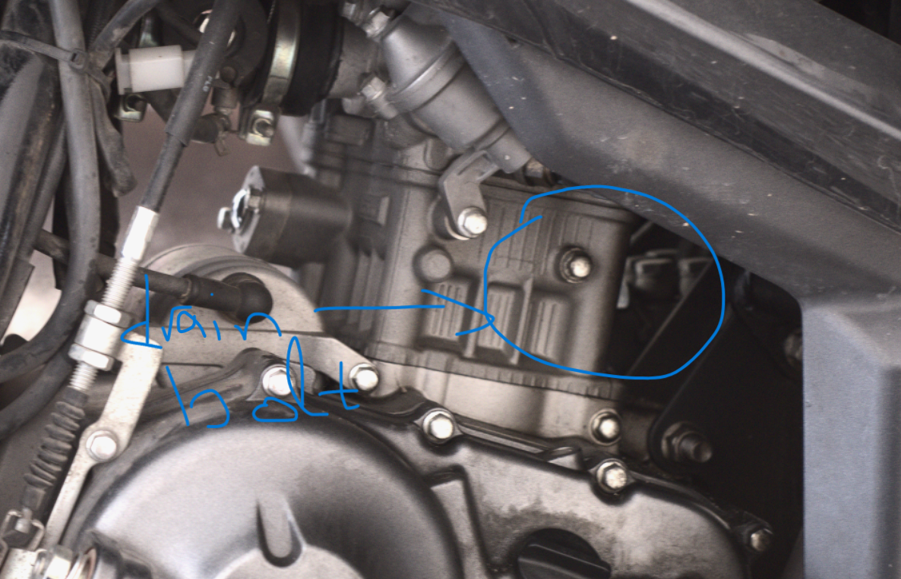

Table of Contents
1. Change motorycle engine coolant

Figure 1: Position of drain bolt
1.1. Steps to change the engine coolant
- Remove the drain bolt : size of bolt 8mm wrench (check again M___)
- If the bolt is rusty, replace
- Remove the top of the radiator
- Let the fluid drain, using a fuel and a bucket, move the motorycle, to move as much fluid as possible
- Empty the overflow tank - need to check the tank empties from drain bolt or need to remove the hose under it.
- Tighten again the bolt
- Fill with distilled water
- Flush the distiller water, removing the bolt, repeat if necessary.
- Tighten the bolt and clean any cooling liquid leftovers.
- Fill with new cooling liquid.
- Cooling liquid quantity according to manufacturer is about 1 liter, if the quanity added much lower , the previus liquid was not removed.
- Move the engine , to fill more.
- Fill overflow tank
- Fix radiator fins shape with a screw driver.
- Start the engine without the refrigerator cap.
- Fill more cooling liquid.
- Leave the engine running, moving the motorycle, filling liquid.
- Make sure it is properly filled, if not the engine will start overheating
- If the engine is overheating, it is not filled with new cooling liquid.
- Wait a bit to cool, remove the radiator cap and refill, until the new cooling fluid circulates through the pump and fills the engine
- Check with the engine on if the engine overheats and fill more cooling fluid.
1.2. Comments:
- The flow appears to be little up , in the engine , so probably there must be some leftovers.
- It needs to be filled very little each time, make some bubbles to suck the fluid, and fill again as much as the radiator cap area can take.
- I can not be filled by the overflow tank.
- The overflow does not change level, need to check radiator pressure.
- It had white salt deposits undfer the cap.
1.3. TODO
- Find a more quick way to fill the engine coolant.